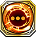
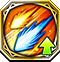

Chaos RS
Resonance Skills obtained from Lost Ragnarok units of the Chaos Lion Empire faction. Can only be use by Special units and Chaos Lion units.
3401013

Abaris |
 パズズの熱風
パズズの熱風
|
|---|---|
| 自身のHPが80上昇し、敵ユニットをすり抜けて移動することができる。さらに自身から攻撃を仕掛けたデュエル時、相手の物防を20下降させる | |
3401023

Abaris |
 パズズの新風
パズズの新風
|
| 射程1の攻撃が可能になるが、射程1での攻撃時、自身に追撃が発生しづらくなり、相手に追撃が発生しやすい ※弓ユニット以外が装備した場合は発動しない | |
3101213

Adamas |
 アイムの賢明
アイムの賢明
|
| クエスト開始から2ターンの間、忘却・挑発耐性を持つ ※この耐性はデュエル時以外の忘却・挑発に対しても効果を発揮する | |
3401313

Aphrodite |
 アスモデウスの反逆
アスモデウスの反逆
|
| 自身の力が25上昇し、攻撃時、80%の確率でデュエル相手に1ターンの間毒を付与する | |
5401313

Aphrodite |
 アスモデウスの寵愛
アスモデウスの寵愛
|
| 自身および周囲3マス以内の味方ユニットのHPを20%回復し、2ターンの間、90%の幻惑・行動不可耐性を付与する | |
3102313

Ascalon |
 レヴィアタンの閃光
レヴィアタンの閃光
|
| 自軍全ユニットのHPが50、力・魔・守・精が2上昇する ※自軍に同じスキルを装備しているユニットが多いほど、重複して効果が発動する | |
3102323

Ascalon |
 レヴィアタンの渦潮
レヴィアタンの渦潮
|
| 自身を含む周囲3マス以内の味方ユニットの出血・忘却を治癒し、HPを最大HPの20%分回復する | |
5102313

Ascalon |
 レヴィアタンの渦動
レヴィアタンの渦動
|
| クエスト開始から2ターンの間、行動不可耐性を持つ ※この耐性はデュエル時以外の行動不可に対しても効果を発揮する | |
5102323

Ascalon |
レヴィアタンの禍福
|
| 自身の回避率が10%上昇し、クエスト開始から5ターンの間、行動不可耐性を持つ ※この耐性はデュエル時以外の行動不可に対しても効果を発揮する | |
3200213

Aymur |
 モートの捕食
モートの捕食
|
| クエスト開始から3ターンの間、自身から攻撃を仕掛けたデュエル後、与えたダメージの30%分、自身のHPを回復する | |
3500813

Bashosen |
 リリスの色香 |
| 周囲5マス以内の敵ユニット1体に付与された、コマンドスキルの効果を2ターンの間無効にする | |
3500713

Brionac |
 バルバトスの探知
バルバトスの探知
|
| 自身を含む周囲5マス以内の味方ユニット1体の封印を治癒する | |
3201913

Chiyou |
ベルゼブブの暴食 |
| 自身の物攻が35上昇し、HPが80%以上の場合、さらに物攻・物防が15上昇する | |
3201923

Chiyou |
 ベルゼブブの奮起
ベルゼブブの奮起
|
| HPが100上昇し、HP減少値に応じて物攻・物防が上昇する ※最大でHPが30%以下の時、20%上昇する | |
5201913

Chiyou |
 ベルゼブブの高雅
ベルゼブブの高雅
|
| 光属性ユニットへ与えるダメージが80%増加するが、光属性ユニットから受けるダメージが30%増加する | |
3102713

Claidheamh Soluis |
 ベリアルの弁舌
ベリアルの弁舌
|
| 闇属性ユニットへ与えるダメージが80%増加するが、闇属性ユニットから受けるダメージが30%増加する | |
3100313

Durandal |
 アレスの闘志
アレスの闘志
|
| 自身を除く、味方ユニット1体のコマンドスキルの使用回数を1回分回復する。さらにHP50%分回復する | |
3401913

Failnaught |
ルシファーの大罪 |
| 防御時に50%の確率で発動。敵から受けるダメージを50%軽減する。フェイルノート装備時、相手がトレイセーマ共和国ユニットの場合、受けるダメージを70%軽減する | |
3401923

Failnaught |
 ルシファーの謀略
ルシファーの謀略
|
| 自身の物攻が20上昇する。さらに自軍フェーズ開始時、自身および周囲3マス以内の味方ユニットのHPを最大HPの10%分回復する | |
5401913

Failnaught |
ルシファーの叛逆 |
| フェイルノート装備時のみ発動。自身のHPが1000、守・精が50、運が20上昇する | |
5401923

Failnaught |
ルシファーの天墜 |
| フェイルノート装備時のみ発動。クエスト開始時、自身に「各属性ユニットとのデュエル時に1000以上のダメージを受ける時、クエスト中にそれぞれ1回までそのダメージを50へと変換する」効果を付与する ※連撃や追撃が発生する場合、そのデュエル中の1000以上の全てのダメージに対して発動する | |
44019001

Failnaught |
つまみ食いせし皇帝 |
| ゴッドキラーズが装備した時、速・運が100%下降し、クエスト開始から2ターンの間、物防・魔防が500上昇する | |
44019002

Failnaught |
ルシファーの叛逆 |
| フェイルノート装備時のみ発動。自身のHPが1000、守・精が50、運が20上昇する | |
3600213

Gambanteinn |
 サルガタナスの不可視
サルガタナスの不可視
|
| 1ターンの間、自身および周囲3マス以内の味方ユニットの命中率を100%にする | |
3600813

Gridarvol |
 ムルムルの召霊 |
| 1ターンの間、選択したユニットに追撃が発生する効果を付与する ※相手が追撃を封じるスキルを所持している場合は追撃が発生しない | |
|
3300813
Gungnir |
 アモンの鎮撫
アモンの鎮撫
|
| 風属性ユニットへ与えるダメージが80%増加するが、氷属性ユニットから受けるダメージが30%増加する | |
3302813

Helena |
 ロキの詐術
ロキの詐術
|
| 1ターンの間、敵軍全ユニットの運を35下降させる | |
3302823

Helena |
 ロキの悪戯
ロキの悪戯
|
| 自身のHPが200上昇する。デュエル時、自身が有利属性の場合、与えるダメージが35%上昇する。また、隣接する敵ユニットとのデュエル時、物攻が35上昇する | |
5302813

Helena |
 ロキの暗躍
ロキの暗躍
|
| 雷属性ユニットへ与えるダメージが80%増加するが、炎属性ユニットから受けるダメージが30%増加する | |
43028001

Helena |
巨悪魔フェイク |
| 周囲2マス以内の全ユニットに1ターンの間、幻惑を付与する。また、自身には2ターンの間、幻惑を付与する | |
3300313

Houtengageki |
 アバドンの冷厳
アバドンの冷厳
|
| 自身のHPが150上昇し、デュエル時に毒・麻痺に対して50%の耐性を得る | |
3301413

Ithuriel |
 マルコシアスの忠誠
マルコシアスの忠誠
|
| 光・闇属性に与えるダメージが30%増加する。氷属性ユニット装備時、HPが100上昇する | |
3100513

Littu |
 ナベリウスの碩学
ナベリウスの碩学
|
| 炎・風・雷・氷属性に与えるダメージが15%増加する。風属性ユニット装備時、HPが100上昇する | |
3400813

Othinus |
オセの王冠 |
| 自身のHPが150、物攻・物防が10上昇し、デュエル時に封印に対して60%の耐性を得る | |
3400823

Othinus |
 オセの奇術
オセの奇術
|
| 自身を除く周囲3マス以内の味方ユニットの麻痺を治癒する。さらに2ターンの間、デュエル時に100%の麻痺耐性を付与する | |
3101313

Paracelsus |
バフォメットの宴 |
| 1ターンの間、周囲3マス以内の敵ユニット1体の運を100%下降させる | |
3200413

Parashu |
 アスタロスの糾問
アスタロスの糾問
|
| 自身の力が25上昇し、攻撃時、35%の確率で1ターンの間麻痺を付与する | |
3200423

Parashu |
 アスタロスの吐息
アスタロスの吐息
|
| HPを10%消費して発動。周囲7マス以内の敵1体と、その周囲2マス以内にいる敵にHP15%分のダメージを与える※このダメージでは撤退させられない。また、HP10%以下の場合は使用できない | |
3601413

Ptah |
 ブエルの啓蒙
ブエルの啓蒙
|
| 自身の魔が25上昇し、攻撃時、35%の確率で1ターンの間麻痺を付与する | |
3301013

Rhongomyniad |
グラシャラボラスの猛進 |
| 自身のHPが200上昇し、物攻・物防・魔防が10上昇する | |
3502413

Saika |
 ハルファスの審決
ハルファスの審決
|
| 銃ユニット装備時、自身が所持する攻撃魔弾の射程を+1するが、氷属性以外のユニットが装備した場合、魔攻が大幅に下がる | |
3502113

Sefer |
 ダンタリオンの読心
ダンタリオンの読心
|
| 自身の魔攻が20上昇する。さらに自軍フェーズ開始時、自身および周囲3マス以内の味方ユニットのHPを最大HPの10%分回復する | |
3600313

Thyrsos |
 フォルネウスの博学
フォルネウスの博学
|
| 自身および周囲3マス以内の味方ユニットのHPを20%回復し、2ターンの間、90%の毒・麻痺耐性を付与する | |
3201013

Ukonvasara |
 ヴィネの看破
ヴィネの看破
|
| クエスト開始から2ターンの間、封印・麻痺耐性を持つ ※この耐性はデュエル時以外の封印・麻痺に対しても効果を発揮する | |
3201113

Vazra |
 フールフールの虚偽
フールフールの虚偽
|
| クエスト開始から4ターンの間、コマンドスキルによるパラメータ減少を反転する | |
3201713

Yagrush |
 バエルの知恵
バエルの知恵
|
| クエスト開始から3ターン目までの間、自軍フェーズ開始時に、自身のHPが100%回復する |